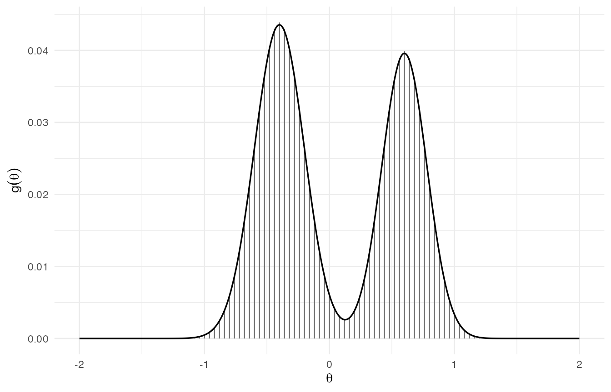

M1 · The empirical-Bayes deconvolution problem
Source:vignettes/m1-empirical-bayes-deconvolution.Rmd
m1-empirical-bayes-deconvolution.RmdScope of this vignette
This is the first vignette in the methodological track. Its purpose
is to motivate the empirical-Bayes deconvolution problem that
bayesEfron solves and to justify the particular modelling
choices that distinguish this package from its closest relatives.
Subsequent vignettes in the methodological track (M2–M6) descend through
the parameterisation, the random-effects hierarchy, grid construction,
the Stan implementation, and the verification programme. A short reading
map at the end indicates where each load-bearing claim is either proved
or computationally checked.
Notation registry
| Symbol | Meaning |
|---|---|
| Number of sites | |
| Latent site effect | |
| Observed effect estimate | |
| Within-study standard error | |
| Mixing distribution | |
| Grid length | |
| Spline degrees of freedom | |
| Spline coefficient vector | |
| Smoothness precision (half-Cauchy prior) |
The setup
Index
independent sites by
.
From the design at site
the analyst extracts a real-valued effect estimate
together with an associated within-study standard error
.
The standard errors are treated as known inputs: they are computed from
the site-level design (typically by metafor::escalc() or
its analogue at the user’s site) and are not themselves parameters of
the model. They are also generally heteroscedastic — different sites
have different sample sizes, designs, and within-site variances, so the
vary substantially across
in practice.
The generative assumption is two-stage. First the latent site effects are drawn independently from a common mixing distribution : Conditional on the latent effect, the observed estimate is normally distributed around with the known within-study standard error: The two stages together imply that the marginal density of is the convolution of with a normal kernel: where is the centred normal density with standard deviation . The inference problem is therefore a deconvolution problem in the classical sense: recover the mixing distribution from observations of a convolved marginal , under heteroscedastic Gaussian noise. The heteroscedasticity matters: different sites contribute marginal densities with different smoothing kernels, so the convolved marginals do not admit a single common decomposition.
The Robbins-Efron formulation
The empirical-Bayes literature begins with Robbins’s (1956) compound-decision insight: when the same decision rule is applied in parallel to related sub-problems, the optimal rule depends on the marginal distribution of the parameters across the sites, not on any individual in isolation. In the deconvolution setting this insight implies that good per-site predictions, shrinkage estimators, and tail-probability statements all factor through the unknown mixing distribution . Knowing is therefore not a secondary curiosity; it is a prerequisite for any per-site Bayes rule.
Efron’s contribution in a sequence of papers culminating in his 2016 Biometrika article (“Empirical Bayes deconvolution estimates”) recast the Robbins programme in explicitly density-modelling terms. The framing is the marginal-density identity together with the explicit acknowledgement that the inferential target — the latent prior — appears only inside an integral convolved with the Gaussian sampling kernel. Three operational consequences follow.
First, is identified up to the regularity of the convolution: the Gaussian kernel is strictly positive and analytic, so distinct that generate distinct marginal densities are recoverable in principle, but the recovery is ill-conditioned at fine scales. The practical implication is that some form of regularisation — either parametric form, a smoothness penalty, or a prior on the parameters of — is required to obtain a stable estimate of at finite .
Second, the per-site posterior at any candidate is given by Bayes’s rule applied to the convolution: . The shape of enters the posterior linearly in -space, so the per-site shrinkage and the location of posterior mass depend tightly on how the estimator of has been regularised.
Third, the empirical-Bayes step that estimates from the and plugs into the per-site Bayes rule treats as if it were known. At large the sampling uncertainty in vanishes and the plug-in is asymptotically honest; at the moderate that dominate applied work, the plug-in omits a genuine source of posterior uncertainty. This finite-sample gap is the proximate motivation for the fully Bayesian treatment discussed in §“Fully Bayesian versus empirical-Bayes” below.
The prior-art landscape
Several families of estimator for
have been studied in the deconvolution and empirical-Bayes literature.
Four are directly relevant to the design choices in
bayesEfron.
NPMLE. The nonparametric maximum-likelihood
estimator places no parametric form on
and maximises the marginal likelihood over the space of all probability
distributions. Lindsay’s (1995) result establishes that the solution is
a discrete distribution with at most
atoms, located at data-determined support points. The NPMLE has
attractive properties — consistency, no functional-form bias, and a
convex optimisation that scales reasonably with
— and is implemented in REBayes, ashr, and
mixSQP. Its disadvantage in the present setting is
precisely the discreteness of the solution. When the true
is a smooth density (as it is in essentially every applied meta-analytic
context where the underlying causal mechanism varies continuously across
sites), the NPMLE places mass on a finite collection of points and is
structurally unable to represent the true density’s continuous support.
The discrete approximation can be adequate for ranking and selection
problems, but it is awkward for inference on functionals of
— such as the variance, the quartiles, or the tail probabilities — that
the meta-analyst typically wants to report.
Laplace prior. Closed-form Laplace shrinkage assumes is a Laplace density and exploits the resulting analytical posterior. The estimator is fast, transparent, and admits closed-form credible intervals. It commits, however, to a specific tail behaviour (double-exponential decay) and to a unimodal symmetric shape, neither of which is plausible across the heterogeneity patterns observed in education and policy meta-analyses. The Laplace family also lacks a natural mechanism for representing the asymmetry, skew, or multiple modes that are common in real cross-site distributions of treatment effects.
Point-normal prior. The point-normal (spike-and-slab) prior models as a mixture of a point mass at zero (or another anchor) and a Gaussian slab over the rest of . The specification is parsimonious and useful when the true effects are genuinely sparse — for example, in screening problems where most effects are exactly null. As a default for meta-analytic deconvolution it sits uneasily, because it mixes a parametric sparsity assumption with the nonparametric flexibility the deconvolution problem was meant to provide. When the true has no mass at zero, the spike component forces the model to absorb dense near-zero structure into a degenerate atom, distorting both the prior estimate and the per-site posteriors.
Log-spline prior. Efron’s chosen prior, and the one this package implements, represents as a discretised exponential family on a fixed support grid . The unnormalised log-density at the grid points is a linear combination of natural-cubic-spline basis functions: , with a fixed basis matrix and the parameter. The normalised density is . The log-spline prior is parametric in the spline coefficient vector but nonparametric in the resulting family of densities: with even a modest spline dimension the basis can represent skewed, asymmetric, and modestly multimodal densities, and the implicit smoothness of the cubic-spline basis prevents the pathological peakiness that an unregularised NPMLE can produce. The fixed-grid construction also makes the model amenable to off-the-shelf Bayesian samplers, which the NPMLE — with its data-determined atoms — is not.
Why log-spline
The log-spline prior is not the only smooth nonparametric density family one might use for , but it has three properties that together account for its prominence in the deconvolution literature.
First, flexibility. The natural-cubic-spline basis on a fixed grid can approximate a wide range of unimodal and modestly multimodal smooth densities to arbitrary accuracy as the spline dimension grows, while remaining tractable at small . For the applied meta-analytic distributions that motivate this package — a few modes, possibly skewed, possibly heavy-tailed but not extremely so — values of between 5 and 8 typically suffice. The package’s default is calibrated to the benchmark distributions used in the paper that motivates the package.
Second, identifiability. The softmax map is
invariant to adding a constant to every component of
,
so an intercept column in the basis would be unidentifiable. The
standard remedy — used here — is to construct the basis with
splines::ns(grid, df = M, intercept = FALSE), which removes
the redundant constant direction. The resulting parameterisation is
identifiable on the spline coefficients, and the proper hyperprior on
the smoothness scale (see below) ensures a proper joint posterior on
under standard regularity conditions.
Third, exponential-family structure. The log-density is linear in , so the marginal likelihood of the data under is a mixture-of-Gaussians density in — a tractable target for Hamiltonian Monte Carlo. The smoothness penalty enters as a zero-mean Gaussian prior on with precision . The log-density is smooth in , and the Gaussian prior contributes a quadratic penalty. Together with the log-sum-exp marginal likelihood, this gives Stan a differentiable target for HMC, but it is not a conjugate update. Together these properties make the log-spline prior the natural compromise between the unrealistic discreteness of the NPMLE and the rigid parametric form of the Laplace or point-normal alternatives.
Fully Bayesian versus empirical-Bayes
Efron’s original implementation of the log-spline prior chose the smoothness penalty by cross-validation: was estimated by penalised maximum marginal likelihood, with the penalty constant selected on a held-out scoring rule. The procedure is fast and delivers a point estimate , but the credible intervals it produces — built around the linearised variance of — condition on the estimated prior as if it were the true prior. At finite this conditioning omits a genuine source of uncertainty, and the resulting empirical-Bayes intervals can undercover. The mechanism is structural: the delta-method linearisation around captures first-order sampling variability in the penalised estimator but discards both higher-order curvature and any prior uncertainty about itself.
The fully Bayesian formulation in bayesEfron closes this
gap by placing a hyperprior on the smoothness precision and integrating
over both layers of uncertainty. Specifically,
and
is assigned a half-Cauchy hyperprior. The half-Cauchy citation is to
Gelman’s (2006, Bayesian Analysis) weakly informative
scale-prior rationale; the package follows Lee and Sui in placing it on
the smoothness precision
,
with
connecting the two parameterisations. The joint posterior over
is sampled by Hamiltonian Monte Carlo in Stan, and every functional of
— including the per-site posterior mean, posterior standard deviation,
and posterior replicate
— inherits the integration over both layers. The trade-off is
computational: the fully Bayesian fit is an HMC run rather than an
optimisation, with corresponding increases in wall-clock time and
diagnostic burden. The compensating benefit is that credible intervals
on
are calibrated jointly over the prior and the per-site uncertainty. Lee
and Sui (2025, Mathematics) report near-nominal
–
coverage for
credible intervals under the package’s fully Bayesian formulation; the
package’s own Tier 3 release verification reproduces this calibration
result with aggregate theta_rep interval coverage in the
acceptance band on the locked Lee-Sui benchmark fixtures across
.
Vignette M6 documents that evidence in full.
A small illustration
To fix ideas, consider a bimodal mixing distribution sampled at the
default grid resolution. The figure below shows a continuous reference
density and its discretisation onto a
length-
grid constructed by make_efron_grid(). The grid is the
fixed support on which the log-spline parameterisation operates; the
discrete bars are the target the model would aim to recover under
perfect data.
set.seed(2026)
theta_hat_demo <- c(seq(-1.0, 1.0, length.out = 9), -0.8, 0.6, 0.85)
sigma_demo <- rep(0.15, length(theta_hat_demo))
g_obj <- make_efron_grid(
theta_hat = theta_hat_demo,
sigma = sigma_demo,
L = 101L,
M = 6L
)
theta_grid <- g_obj$grid
g_cont <- function(t) {
0.55 * dnorm(t, mean = -0.4, sd = 0.20) +
0.45 * dnorm(t, mean = 0.6, sd = 0.18)
}
g_grid <- g_cont(theta_grid)
g_grid <- g_grid / sum(g_grid)
theta_dense <- seq(min(theta_grid), max(theta_grid), length.out = 401)
if (has_ggplot2) {
df_cont <- data.frame(theta = theta_dense, density = g_cont(theta_dense))
df_grid <- data.frame(theta = theta_grid, mass = g_grid)
ggplot2::ggplot() +
ggplot2::geom_segment(
data = df_grid,
ggplot2::aes(x = theta, xend = theta, y = 0, yend = mass),
colour = "grey40", linewidth = 0.4
) +
ggplot2::geom_line(
data = df_cont,
ggplot2::aes(x = theta, y = density / sum(density) *
length(theta_dense) / length(theta_grid)),
colour = "black", linewidth = 0.6
) +
ggplot2::labs(
x = expression(theta),
y = expression(g(theta)),
title = NULL
) +
ggplot2::theme_minimal(base_size = 11)
} else {
par(mar = c(4, 4, 1, 1))
plot(theta_grid, g_grid, type = "h", col = "grey40", lwd = 1,
xlab = expression(theta), ylab = expression(g(theta)))
lines(theta_dense,
g_cont(theta_dense) / sum(g_cont(theta_dense)) *
length(theta_dense) / length(theta_grid),
col = "black", lwd = 1.5)
}
Continuous bimodal mixing distribution g and its discretisation onto the length-L grid produced by make_efron_grid().
The deconvolution problem is to recover such a — or a smooth approximation thereof representable in the log-spline basis — from a set of noisy estimates drawn from the convolved marginals .
Reading map for the methodological track
The remaining methodological vignettes carry the development through the implementation and verification of the model sketched above.
- M2 — The Efron log-spline prior. Detailed treatment of the log-spline parameterisation: the natural-cubic-spline basis, the softmax map, the role of the intercept-exclusion convention in identifiability, and the relation between the spline dimension and the expressible density family.
- M3 — The random-effects hierarchy. Embedding of the log-spline prior into the four-level random-effects model: sampling level, latent-effect level, spline-coefficient level, and smoothness hyperprior. Statement and verification of the proper-posterior conditions.
-
M4 — Grid construction. The four grid recipes
exposed by
make_efron_grid(), the trade-offs between grid width and resolution, and the KL-bounded experimental grid rule. -
M5 — Stan model and cache. The byte-locked Stan
source, the numerical-stability disciplines (
log_sum_exp, max-shift normalisation, two-pass variance), and the cache that prevents redundant compilation. - M6 — Verification and calibration. End-to-end coverage verification against the benchmark distributions, the release-blocking acceptance band on the per-site replicate intervals, and the diagnostic surface of the fitted object.
A reader who follows the track end-to-end will exit with a complete picture of the model, its implementation, and the empirical case for the calibration claims it makes.